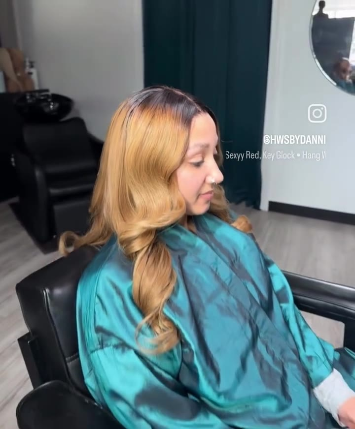
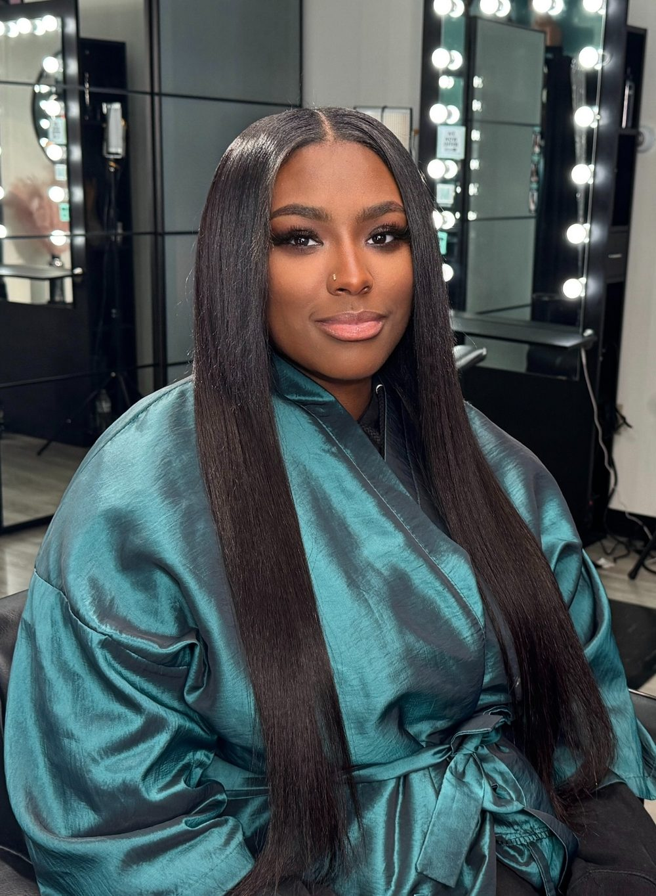

Reserve Your Visit
Ready to love your hair?
Book your one-on-one appointment today and experience the HWS by Danielle difference.
Reserve Your Appointment New here? Request a Consultation

A traditional sew-in starts with your natural hair braided down into a flat foundation. Wefts of extension hair are then sewn onto those braids by hand, row by row, so nothing is glued and nothing is bonded to your strands.
What makes it traditional is the leave-out: a small section of your own hair, usually around the hairline and along the part, is left unbraided and worn over the top of the install.
That leave-out is what does the blending. Because the hair framing your face is genuinely yours, the part reads as scalp, the hairline reads as your hairline, and there is no visible seam where the extensions begin. Installed well, nobody can tell where your hair ends and the extensions start.
The trade-off is that the leave-out stays exposed. It is real hair, worn loose, and it needs the same care it would if you were not wearing extensions at all — which is what the section below is about.
Traditional sew-ins suit women who want length or fullness without their hair looking done. It is the quieter of the two options, and the one that disappears into an everyday professional look.
It tends to be the right fit if you want a look that reads as your own hair, prefer lower day-to-day maintenance, are comfortable leaving a small amount of hair out, wear your hair down most of the time, or are new to sew-ins and would rather start with something familiar.
If you live in ponytails and updos, read the Versatile sew-in instead — that is the difference that matters most between them.
Every appointment opens with a consultation. Danielle looks at your density, your edges, how your hair is growing and where it is thinning, and what you are actually trying to achieve. Nothing is decided before that conversation, and the amount left out is set here rather than assumed.
Next is the braid-down, which is the part most people underestimate. The pattern your hair is braided in determines how flat the install sits, how it moves, and how comfortable it is for the weeks you will be wearing it. A foundation braided too tight causes tension at the roots; braided too loose, the tracks shift. This is where the 27 years show.
The wefts are then sewn on by hand, row by row, and placed so the install stays flat where you part and fuller where you want body. Finally the leave-out is blended over the top, and the whole thing is cut and styled to you — not to the hair as it came out of the packaging.
This is the single thing that decides whether a traditional sew-in leaves your hair better or worse than it found it, so it is worth being plain about.
Your leave-out is smoothed to match the texture of the extension hair, which means it sees more heat and more handling than the hair resting underneath the braids. Over several weeks that adds up. Keeping the heat low, using a protectant every time, and wrapping or protecting the hair at night is most of the work.
The hair under the braids is doing the opposite — resting, protected, left alone. That contrast is exactly why the leave-out is the part that needs attention. Danielle will give you guidance for your hair specifically, and will tell you when it is time to come back rather than leaving you to guess.
Most sew-ins are worn for about six to eight weeks before they are taken down and reinstalled, usually with a maintenance visit partway through to refresh the leave-out and care for your scalp.
Leaving an install in much longer than that is where damage tends to start: your natural hair keeps growing, the braids loosen away from the scalp, and the tension moves to places it should not be. Danielle sets the right window for your hair at your appointment. There is more on timing, care and travel in the frequently asked questions.
Both are sew-ins, both are installed one-on-one, and both are Danielle's specialty. The practical difference is how much of your own hair stays out, and what that lets you do with it afterwards.
A Traditional sew-in leaves a small amount out for blending. It looks the most like your own hair and asks the least of you day to day, but a high ponytail will expose the tracks.
A Versatile sew-in leaves little to nothing out. You lose the leave-out blend at the part and gain the freedom to wear it up, pulled back, or parted anywhere. Read about the Versatile sew-in →
If you are between the two, that is what the consultation is for. Most women arrive unsure and leave with a clear answer.

The part and the hairline here are the client's own hair, worn over the top of the install. That is the whole idea of a traditional sew-in: there is no seam to spot, because the hair framing her face is genuinely hers.
The length and the fullness are the extensions' work. The blending is the leave-out's — which is why the section above spends so long on how to look after it.
Only as much as it takes to blend, which is usually a thin section around the hairline and along the part. Leaving out more than that makes the install harder to hide, not easier, and puts more of your hair under daily styling. Danielle decides the amount by looking at your density and texture at your consultation.
You can wear it half-up and you can move your part, but a high ponytail or a full updo will expose the tracks underneath. If wearing your hair up is something you do often, a Versatile sew-in is the better fit; that is the main practical difference between the two.
It does not have to be, but it is the part that needs your attention. The leave-out is worn loose and is usually smoothed to match the extension hair, so it sees more heat and handling than the hair resting underneath. Keeping heat low, using a protectant, and wrapping at night is what keeps it healthy, and Danielle will show you how at your appointment.
It is usually where first-time clients start. It feels the most like your own hair, the styling is familiar, and there is less of an adjustment than with an install that covers everything. If you are not sure, the consultation is there to work it out before anything is booked.
Your investment is discussed privately in your consultation →
Book your one-on-one appointment today and experience the HWS by Danielle difference.
Reserve Your Appointment New here? Request a Consultation